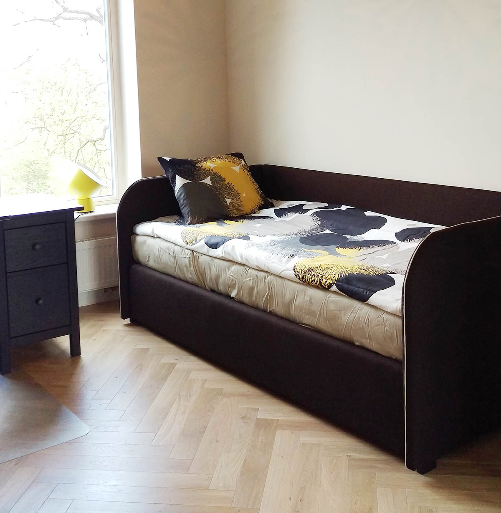

Miegamojo lovos | Miegamojo baldai | Elektroninė baldų parduotuvė bgbaldai.lt
 Registruotis Prisijungimas Prisijungimas Prekių krepšelis Krepšelis tuščias. Viso prekių už 0 00 € Peržiūrėti krepšelį+370 602 92019
Miegamasis Lovos Čiužiniai Spintelės Komodos Spintos Svetainė Minkšti kampai Sofos Foteliai Staliukai Valgomojo stalai Komodos Spintos Klasikiniai baldai Prieškambaris Batų dėžės Komplektai Vaikų kambarys Dviaukštės lovos Lovos Rašomieji stalai Virtuvė Komplektai Minkšti kampai Miegamasis Lovos Čiužiniai Spintelės Komodos Spintos Svetainė Minkšti kampai Sofos Foteliai Staliukai Valgomojo stalai Komodos Spintos Klasikiniai baldai Prieškambaris Batų dėžės Komplektai Vaikų kambarys Dviaukštės lovos Lovos Rašomieji stalai Virtuvė Komplektai Minkšti kampai Pradžia / Miegamasis / LovosPagalba
Pirkimo sąlygos Pirkimas išsimokėtinai Pristatymas Gobelenai KontaktaiMiegamojo lovos
1 - 32 iš 79 -27 % Miegamojo lova PRESTIŽAS 1400 (su čiužiniu)Šiuolaikiškais dizaino sprendimais pasižyminti miegamojo lova PRESTIŽAS suteiks Jūsų miegamajam lengvumo ir prabangos pojūtį. Kaina nurodyta su čiužiniu.
329 00 € 449 00 € Sutaupykite 120 00 € -31 % Miegamojo lova PRESTIŽAS 1400 (be čiužinio)Šiuolaikiškais dizaino sprendimais pasižyminti miegamojo lova PRESTIŽAS suteiks Jūsų miegamajam lengvumo ir prabangos pojūtį. Kaina nurodyta be čiužinio.
219 00 € 319 00 € Sutaupykite 100 00 € -23 % Miegamojo lova PRESTIŽAS 1600 (su čiužiniu)Šiuolaikiškais dizaino sprendimais pasižyminti miegamojo lova PRESTIŽAS suteiks Jūsų miegamajam lengvumo ir prabangos pojūtį. Kaina nurodyta su čiužiniu.
369 00 € 479 00 € Sutaupykite 110 00 € -27 % Miegamojo lova PRESTIŽAS 1600 (be čiužinio)Šiuolaikiškais dizaino sprendimais pasižyminti miegamojo lova PRESTIŽAS suteiks Jūsų miegamajam lengvumo ir prabangos pojūtį. Kaina nurodyta be čiužinio.
249 00 € 339 00 € Sutaupykite 90 00 € -27 % Miegamojo lova PRESTIŽAS 1800 (su čiužiniu)Šiuolaikiškais dizaino sprendimais pasižyminti miegamojo lova PRESTIŽAS suteiks Jūsų miegamajam lengvumo ir prabangos pojūtį. Kaina nurodyta su čiužiniu.
399 00 € 549 00 € Sutaupykite 150 00 € -33 % Miegamojo lova PRESTIŽAS 1800 (be čiužinio)Šiuolaikiškais dizaino sprendimais pasižyminti miegamojo lova PRESTIŽAS suteiks Jūsų miegamajam lengvumo ir prabangos pojūtį. Kaina nurodyta be čiužinio.
279 00 € 419 00 € Sutaupykite 140 00 € -17 % Miegamojo lova TURINAS 1600 (su čiužiniu)Miegamojo lova TURINAS 1600 skirta tiems, kurie vertina kokybišką miegą ir subtilią prabangą. Lova pasižymi aukštu galvūgaliu, yra patalynės dėžė. Kaina nurodyta su čiužiniu.
349 00 € 419 00 € Sutaupykite 70 00 € -28 % Miegamojo lova TURINAS 1600 (be čiužinio)Miegamojo lova TURINAS 1600 skirta tiems, kurie vertina kokybišką miegą ir subtilią prabangą. Lova pasižymi aukštu galvūgaliu, yra patalynės dėžė. Kaina nurodyta be čiužinio.
229 00 € 319 00 € Sutaupykite 90 00 € -27 % Miegamojo lova HARMONIJA 1600 (su čiužiniu)Nuostabaus dizaino ir elegancijos derinys sukuria tikrą HARMONIJĄ Jūsų namuose!
349 00 € 479 00 € Sutaupykite 130 00 € -36 % Miegamojo lova HARMONIJA 1600 (be čiužinio)Nuostabaus dizaino ir elegancijos derinys sukuria tikrą HARMONIJĄ Jūsų namuose!
229 00 € 359 00 € Sutaupykite 130 00 € -24 % Miegamojo lova STEFANI 1600 (su čiužiniu)Klasikinio stiliaus miegamojo lova Stefani 1600. Kaina nurodyta su čiužiniu.
379 00 € 499 00 € Sutaupykite 120 00 € -35 % Miegamojo lova STEFANI 1600 (be čiužinio)Klasikinio stiliaus miegamojo lova Stefani 1600. Kaina nurodyta be čiužinio.
259 00 € 399 00 € Sutaupykite 140 00 € -21 % Miegamojo lova STEFANI GOLD 1600M (su čiužiniu)Klasikinio stiliaus miegamojo lova Stefani Gold 1600M. Kaina nurodyta su čiužiniu.
439 00 € 559 00 € Sutaupykite 120 00 € -29 % Miegamojo lova STEFANI GOLD 1600M (be čiužinio)Klasikinio stiliaus miegamojo lova Stefani Gold 1600M. Kaina nurodyta be čiužinio.
319 00 € 449 00 € Sutaupykite 130 00 € -12 % Miegamojo lova STEFANI GOLD 1600M (su čiužiniu, be patalynės dėžės)Klasikinio stiliaus miegamojo lova Stefani Gold 1600M. Kaina nurodyta su čiužiniu.
369 00 € 419 00 € Sutaupykite 50 00 € -22 % Miegamojo lova STEFANI GOLD 1600M (be čiužinio, be patalynės dėžės)Klasikinio stiliaus miegamojo lova Stefani Gold 1600M. Kaina nurodyta be čiužinio.
249 00 € 319 00 € Sutaupykite 70 00 € -20 % Miegamojo lova STEFANI 1600 (su čiužiniu, be patalynės dėžės)Klasikinio stiliaus miegamojo lova Stefani 1600 be patalynės dėžės. Kaina nurodyta su čiužiniu.
319 00 € 399 00 € Sutaupykite 80 00 € -29 % Miegamojo lova STEFANI 1600 (be čiužinio, be patalynės dėžės)Klasikinio stiliaus miegamojo lova Stefani 1600 be patalynės dėžės. Kaina nurodyta be čiužinio.
199 00 € 279 00 € Sutaupykite 80 00 € -28 % Miegamojo lova STEFANI GOLD 1400 (su čiužiniu, be patalynės dėžės)Klasikinio stiliaus miegamojo lova STEFANI GOLD 1400 be patalynės dėžės. Kaina nurodyta su čiužiniu.
289 00 € 399 00 € Sutaupykite 110 00 € -38 % Miegamojo lova STEFANI GOLD 1400 (be čiužinio, be patalynės dėžės)Klasikinio stiliaus miegamojo lova STEFANI GOLD 1400 be patalynės dėžės. Kaina nurodyta be čiužinio.
179 00 € 289 00 € Sutaupykite 110 00 € -15 % Miegamojo lova FLORENCIJA 1600 (su čiužiniu)Patogi, funkcionali ir elegantiška. Universalaus dizaino dėka lova atrodo dailiai ir puikiai tiks bet kokiam interjerui. Kaina nurodyta su čiužiniu.
339 00 € 399 00 € Sutaupykite 60 00 € -27 % Miegamojo lova FLORENCIJA 1600 (be čiužinio)Patogi, funkcionali ir elegantiška. Universalaus dizaino dėka lova atrodo dailiai ir puikiai tiks bet kokiam interjerui.
219 00 € 299 00 € Sutaupykite 80 00 € -25 % Miegamojo lova BOUNTY 1600 (su čiužiniu)Miegamos lovos BOUNTY 1600 karkasas pagamintas iš aukštos kokybės, tvirtos, atsparios pažeidimams laminuotos plokštės. Tvirtas pakeliamasis lovos mechanizmas. Patalynės dėžė suskirstyta į kelias nišas, kurios yra pakankamai talpios ir praktiškos.
299 00 € 399 00 € Sutaupykite 100 00 € -24 % Miegamojo lova BOUNTY 1600 (be čiužinio)Patikimas ir begarsis, tvirtas pakeliamasis lovos mechanizmas. Patalynės dėžė suskirstyta į kelias nišas, kurios yra pakankamai talpios ir praktiškos.
189 00 € 249 00 € Sutaupykite 60 00 € -24 % Miegamojo lova VENECIJA 1200 (su čiužiniu)Miegamojo lova VENECIJA 1200 išsiskiria savo prabangiu minkštu galvūgaliu. Turi erdvią patalynės dėžę. Kaina nurodyta su čiužiniu.
319 00 € 419 00 € Sutaupykite 100 00 € -33 % Miegamojo lova VENECIJA 1200 (be čiužinio)Miegamojo lova VENECIJA 1200 išsiskiria savo prabangiu minkštu galvūgaliu. Turi erdvią patalynės dėžę. Kaina nurodyta be čiužinio.
219 00 € 329 00 € Sutaupykite 110 00 € -23 % Miegamojo lova VENECIJA 1400 (su čiužiniu)Miegamojo lova VENECIJA 1400 išsiskiria savo prabangiu minkštu galvūgaliu. Turi erdvią patalynės dėžę. Kaina nurodyta su čiužiniu.
339 00 € 439 00 € Sutaupykite 100 00 € -30 % Miegamojo lova VENECIJA 1400 (be čiužinio)Miegamojo lova VENECIJA 1400 išsiskiria savo prabangiu minkštu galvūgaliu. Turi erdvią patalynės dėžę. Kaina nurodyta be čiužinio.
229 00 € 329 00 € Sutaupykite 100 00 € -18 % Miegamojo lova VENECIJA 1600 (su čiužiniu)Miegamojo lova VENECIJA 1600 išsiskiria savo aukštu ir minkštu galvūgaliu, kuris papuoštas blizgiais kristalais. Turi erdvią patalynės dėžę. Kaina nurodyta su čiužiniu.
359 00 € 439 00 € Sutaupykite 80 00 € -27 % Miegamojo lova VENECIJA 1600 (be čiužinio)Miegamojo lova VENECIJA 1600 išsiskiria savo aukštu ir minkštu galvūgaliu, kuris papuoštas blizgiais kristalais. Turi erdvią patalynės dėžę. Kaina nurodyta be čiužinio.
239 00 € 329 00 € Sutaupykite 90 00 € -20 % Miegamojo lova VENECIJA 1800 (su čiužiniu)Miegamojo lova VENECIJA 1800 išsiskiria savo aukštu ir minkštu galvūgaliu. Turi erdvią patalynės dėžę. Kaina nurodyta su čiužiniu.
399 00 € 499 00 € Sutaupykite 100 00 € -26 % Miegamojo lova VENECIJA 1800 (be čiužinio)Miegamojo lova VENECIJA 1800 išsiskiria savo aukštu ir minkštu galvūgaliu. Turi erdvią patalynės dėžę. Kaina nurodyta be čiužinio.
279 00 € 379 00 € Sutaupykite 100 00 € 1 2 3Gaukite mūsų naujausius pasiūlymus!
Informacija
Aktualijos Populiariausios prekės Akcijos Naujos prekės Pirkimo taisyklės BG Baldai | Elektroninė parduotuvė UAB "Blekas". Kodas: 304890591. PVM mokėtojo kodas: LT100012765018. Dvaro g. 41, LT-76345, Šiauliai. Telefonas: +370 602 92019. Sąskaitos nr.: LT527300010159786735, „Swedbank”, AB. Banko kodas: 112029651, SWIFT: HABALT22. © 2020 UAB "Blekas". Be UAB "Blekas" sutikimo draudžiama kopijuoti ir platinti svetainėje esančią informaciją. Elektroninių parduotuvių nuoma verskis.lt Į viršų